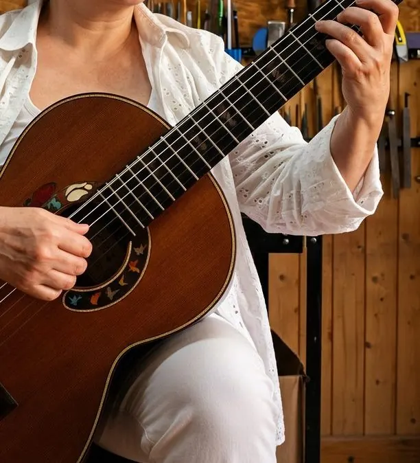
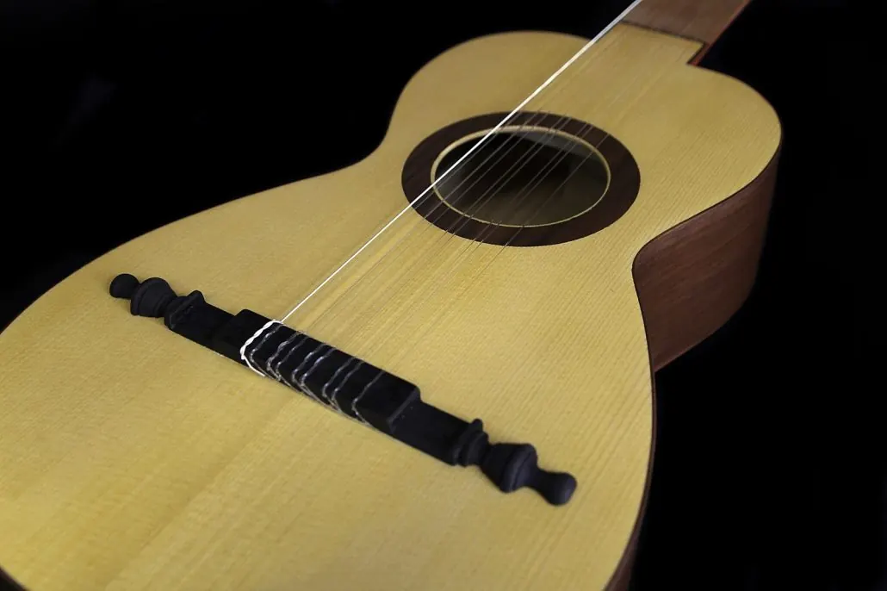

Instrumentos de folclore
La tradición,
hecha instrumento.
Construyo artesanalmente instrumentos de cuerda ligados a nuestra tradición musical, respetando su carácter, su historia y la música para la que fueron concebidos.

Tradición viva · MurciaEl oficio detrás de la tradición
Instrumentos que mantienen viva la tradición.
Cada instrumento tradicional tiene su propia voz, su historia y su lugar en nuestra cultura musical.
En mi taller construyo instrumentos de cuerda de forma artesanal, con atención a sus características, sus materiales y el trabajo necesario para darles vida. La construcción artesanal se une al interés por conocer, comprender y preservar estos instrumentos.
Mi trabajo incluye especialmente el guitarro murciano, una familia de instrumentos cuya construcción y tradición merecen seguir transmitiéndose a nuevas generaciones de músicos.

Guitarro murciano · Detalle de construcción
Catálogo de instrumentos
Cada instrumento,
su propia voz.
Explora la familia de instrumentos que construyo en el taller. Si buscas una variante concreta o tienes una necesidad particular, consúltame para comprobar las posibilidades de fabricación.
Guitarro murciano
Un instrumento ligado a la tradición musical murciana, construido artesanalmente y con atención a sus características propias.
Guitarro de ocho cuerdas
Una variante del guitarro murciano pensada para músicos que buscan las posibilidades de una configuración de ocho cuerdas.
Guitarro valenciano
Instrumento tradicional de cuerda pulsada cuya construcción atiende a las características propias de su tipología.
Guitarro tenor
Pensado para formar parte de conjuntos y repertorios de música popular, con una identidad propia dentro de la familia.
Laúd
Un instrumento fundamental en numerosas formaciones de música tradicional. Construcción artesanal y cuidado del acabado.
Bandurria
Un instrumento emblemático de la música tradicional, construido con dedicación artesanal y cuidado por los detalles.
Guitarra mayor
Un instrumento tradicional que forma parte de la diversidad de nuestra cultura musical, respetando el carácter del modelo.
Instrumento destacado
El guitarro murciano,
una seña de identidad.
Un instrumento de cuerda pulsada con una personalidad sonora inconfundible, ligado a la música tradicional de Murcia.
Su construcción requiere conocer la tipología, elegir maderas adecuadas y trabajar con paciencia cada una de sus partes. El resultado es un instrumento con carácter, cómodo de tocar y fiel a la tradición para la que fue creado.
- Construcción artesanal pieza a pieza
- Selección de maderas según el proyecto
- Asesoramiento sobre configuración y uso
- Acabados y ajustes a medida

Guitarro murciano tenor · Construcción artesanal

Tu instrumento, paso a paso
Todo comienza con
una conversación.
Cuéntame qué buscas
Explícame qué instrumento necesitas, cómo lo vas a utilizar y si tienes alguna preferencia o requisito particular.
Identificamos el instrumento
Revisamos el modelo que mejor se ajusta a tus necesidades y aclaramos sus características, configuración y posibilidades.
Consultamos precio y disponibilidad
Te facilitaré la información comercial correspondiente, incluyendo presupuesto y previsión de disponibilidad o fabricación.
Definimos el encargo
Una vez aclaradas las características y condiciones, concretamos el proyecto antes de iniciar la fabricación.
Preparamos la entrega
Cuando el instrumento esté disponible y acordadas las condiciones, coordinamos los siguientes pasos contigo.
Antes de elegir
Resolvemos tus dudas.
Cada músico tiene sus necesidades. Si estás buscando un instrumento tradicional y necesitas más información, aquí encontrarás respuestas a algunas preguntas habituales.
¿Cómo sé qué instrumento es el adecuado para mí?
Depende del repertorio que interpretes, del tipo de agrupación en la que participes y de las características que busques. Si tienes dudas entre varios modelos, contacta conmigo y estudiaremos cuál se adapta mejor a tus necesidades.
¿Qué instrumentos puedo encargar?
En el catálogo encontrarás los instrumentos de folclore que presento en esta página. Si buscas una variante concreta o tienes una necesidad particular, consúltame para comprobar las posibilidades de fabricación.
¿Cuánto cuesta un instrumento?
El precio depende del modelo, sus características y la configuración acordada. Contacta conmigo para conocer el precio vigente del instrumento que te interesa y recibir la información necesaria antes de decidir.
¿Cuánto tiempo tarda la fabricación?
El plazo depende del instrumento, de si hay unidades disponibles y de la planificación del taller. Consulta la disponibilidad y la previsión correspondiente antes de formalizar el encargo.
¿Puedo solicitar alguna personalización?
Las posibilidades dependen del tipo de instrumento y de las características del proyecto. Cuéntame qué necesitas y valoraremos qué opciones son viables.
¿Cómo se formaliza un encargo?
Primero concretaremos el instrumento, sus características, el presupuesto, la disponibilidad o el plazo previsto y las condiciones aplicables. Antes de confirmar, te explicaré toda la información necesaria para que puedas decidir con claridad.
¿Cómo puedo consultar las opciones de entrega?
Contacta conmigo para conocer las opciones disponibles según el instrumento, tu ubicación y las condiciones de entrega aplicables.
Hablemos de tu proyecto
Hablemos de música y tradición.
Cuéntame qué instrumento tienes en mente, cómo lo vas a utilizar y qué necesitas encontrar en él. Estudiaremos las posibilidades y te facilitaré la información necesaria para dar el siguiente paso.